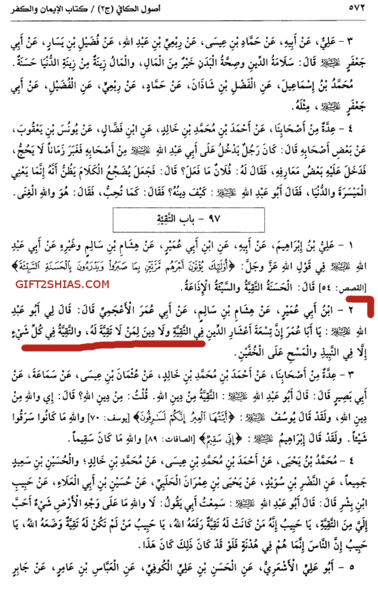
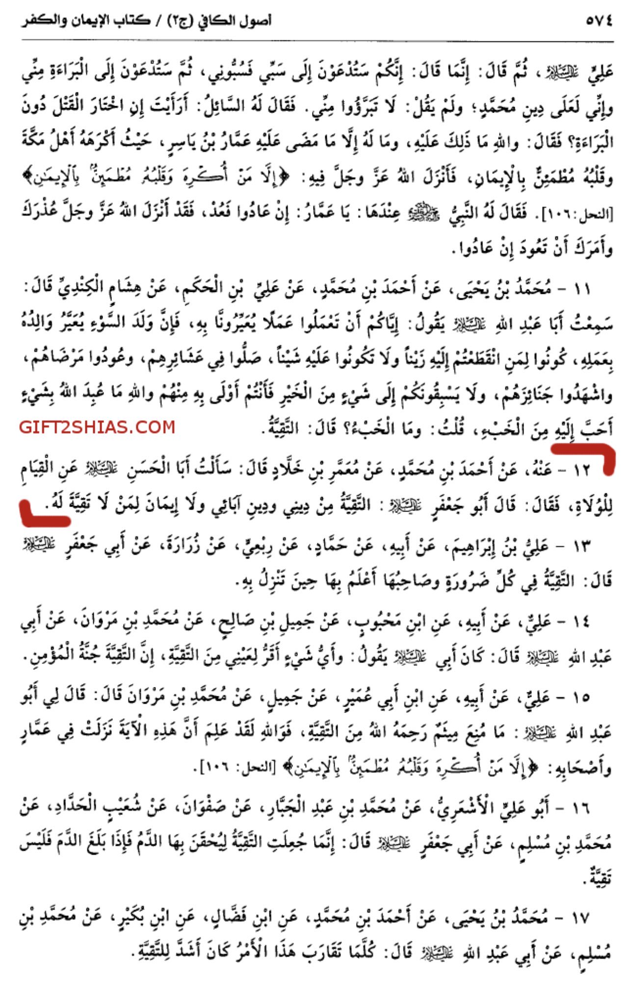
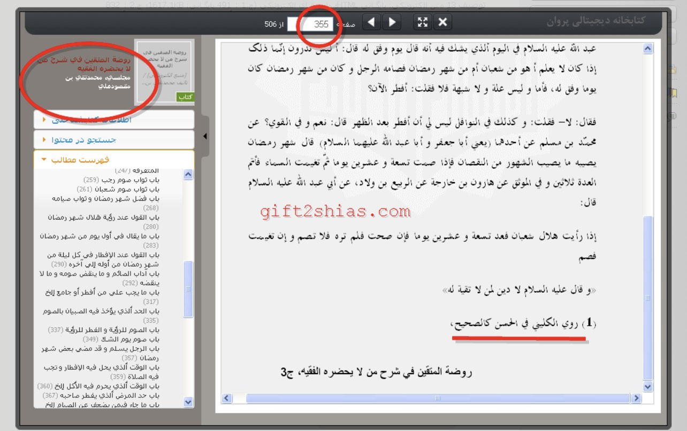
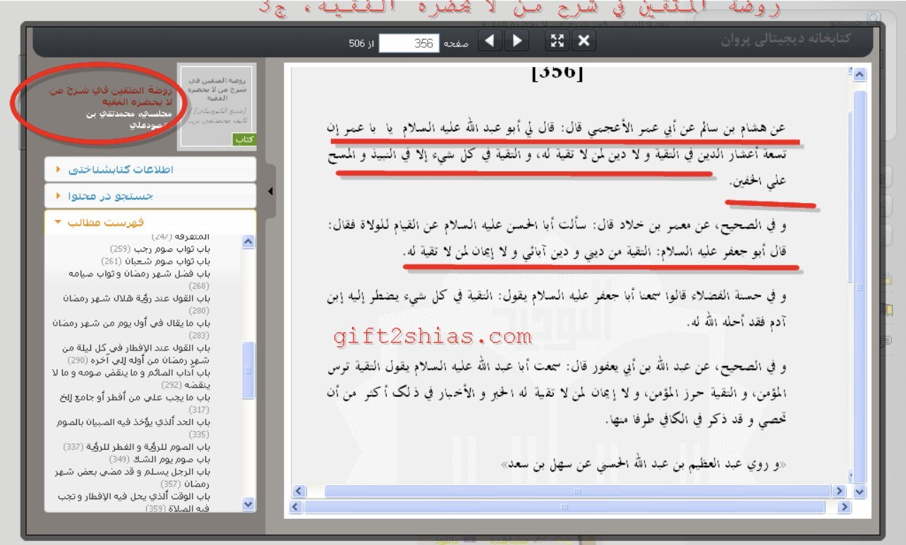
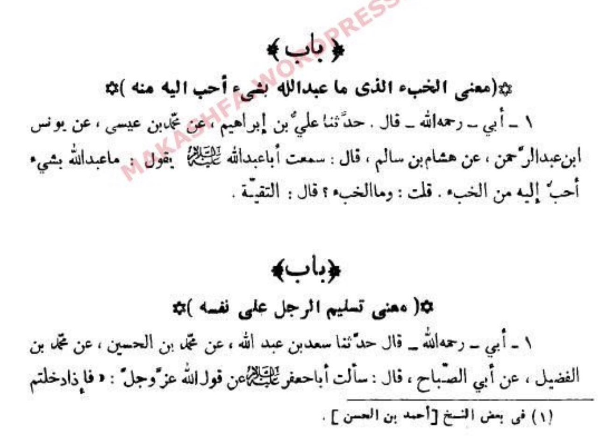
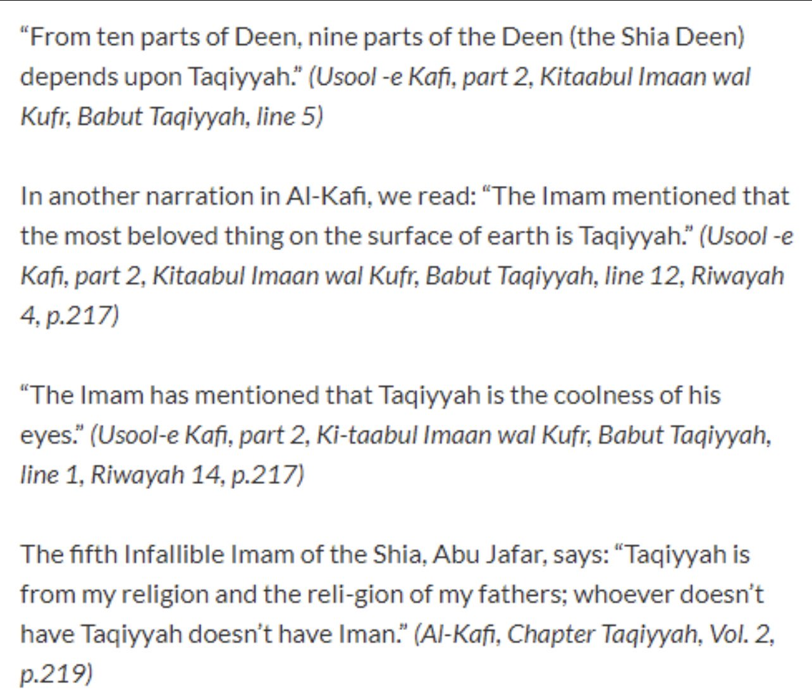

9/10 of Shiaism is Taqiyyah
Shaykh of shias in ahadeth Muhammad al-Kulayni narrated in his “Usool al-Kafi” (p 572):

Translation:
……from Hisham ibn Salim from Abu Amr al-Ajmi, which said: Abu Abdullah (alaihi salam) said to me:
O Umar, 9/10 of religion is in taqiyyah, AND THERE IS NO RELIGION FOR ONE WHO DOESN’T HAVE TAQIYYAH,
AND TAQIYYAH IN EVERYTHING, EXCEPT (drinking of) wine and wiping over khuffayn.”
And he narrated at page (p 574):

Translation:
….from Muamar ibn Khallal, which said: I asked Abul Hasan (alaihi salam) about standing up for rulers,
and he answered: Abu Jafar (alaihi salam) said: Taqiyya from my religion, and from religion of my fathers,
and there is no faith for those who doesn’t have taqiyyah.”
These two reports were authenticated by other known shia scholar.
Majlisi al-Awal, Muhammad Taqi in his book “Rawdatul Muttaqin fi Sharh Man La Yahduruhul Faqih”
(3/355-356).
He said:


Translation:
Narrated Kulayni in Hasan as Saheeh from Hisham ibn Salim from Abu Amr al-Ajmi, which said: Abu Abdullah
(alaihi salam) said to me: O Umar, 9/10 of religion is in taqiyyah, AND THERE IS NO RELIGION FOR ONE WHO DOESN’T HAVE TAQIYYAH,
AND TAQIYYAH IN EVERYTHING, EXCEPT (drinking of) wine and wiping over khuffayn.
And in Saheeh from Muamar ibn Khallal, which said: I asked Abul Hasan (alaihi salam) about standing up for
rulers, and he answered: Abu Jafar (alaihi salam) said: Taqiyya from my religion, and from religion of my fathers, and there is no
faith for those who doesn’t have taqiyyah.
——
What Shia Scholars say about Taqiyyah
While Khomeini is speaking about the various types of Taqiyya in al-Rasa’il 2/174, he explains the
‘Mudaratiyah Taqiyyah’:
“It is the act of making those who differ with us – Ahlus Sunnah – love us and to lure them by friendliness
in a situation where there is no fear of harm or damage - to the shia - unlike the Taqiyya of fear.“
Khomeini continues in al-Rasa’il 2/201 by saying:
“Taqiyyah is wajib (obligatory) with those who differ
with us -Ahlus Sunnah- even if there is no fear on oneself or on someone else’s.”
Shirazi said in al Qawa’id al Fiqhiyah 1/410:
“The Purpose of Taqiyya is not limited to preserve one’s self
and to repel harm and danger from the self and the family and the wealth. It can also be to preserve the unity of the Muslims in
situations where there is no need to reveal the true beliefs or defend them. It can be for other purposes as well,
like spreading the message in a better way.”
Al-Khomeini said in Al Makasib al Muharramah (2/162): “Leaving Taqiyyah is a sin which can lead to the bottom
of hell and is equal to rejecting the prophet-hood and Allah.”
——
Taqiyyah is “most beloved” to Allah according to Shiasm

My father - Ali ibn Ibrahim - Muhammad ibn Eisa - Yunus ibn Adurrahman - Hisham ibn Salim:
I heard Abu Abdullah said:
"Allah wasn't worshipped by anything more beloved to Him than al-Khab" I said: "And what is al-Khab?" He said: "Taqiyyah"
——
Difference between Sunnis and Shias on Taqiyyah
1.) Sunni: Taqiyyah is a concession in times of dire need. It is an exception to the rule.
Shia: Taqiyyah is compulsory no matter the condition. It is the rule and an inseparable part of the faith.
2.) Sunni: Once you are out of threat, the concession for taqiyyah is removed.
Shia: The command of taqiyyah is perpetual until the arrival of their Mahdi.
3.) Sunni: It is encouraged not to practice taqiyyah. A faithful Muslim should remain steadfast in the face of oppression.
Shia: Taqiyyah holds a high position, and holds the value of 90% of the faith. Taqiyyah is to be done even when there’s no fear.
4.) Sunni: Taqiyyah is done with oppressors and transgressors, who threaten to harm/kill you.
Shia: Taqiyyah is done with everyone - be it a Muslim or a non-Muslim, be it an oppressor or just any other common person.
5.) Sunni: Taqiyyah isn’t done to hide any principles/elements of your religion.
Shia: Elements of the Shia faith are hidden/misrepresented to paint a rosy picture using taqiyyah. It is used as a ‘dawah’ tool.
